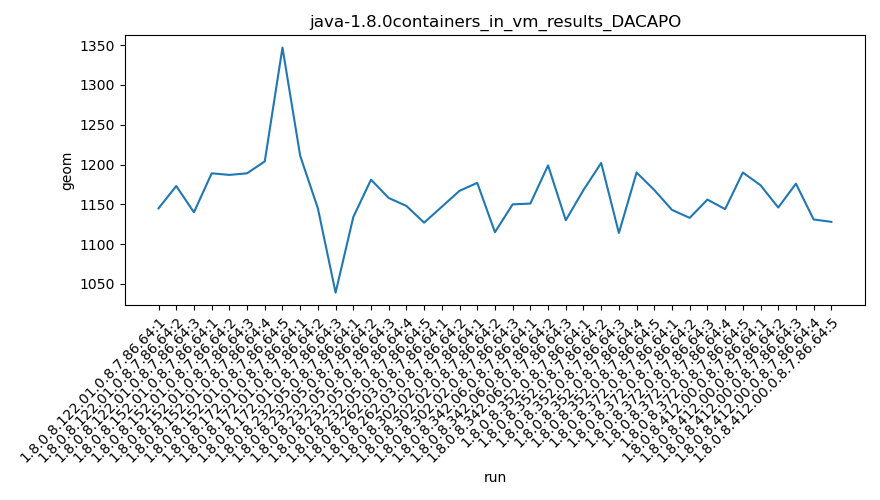
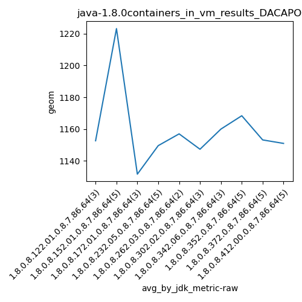
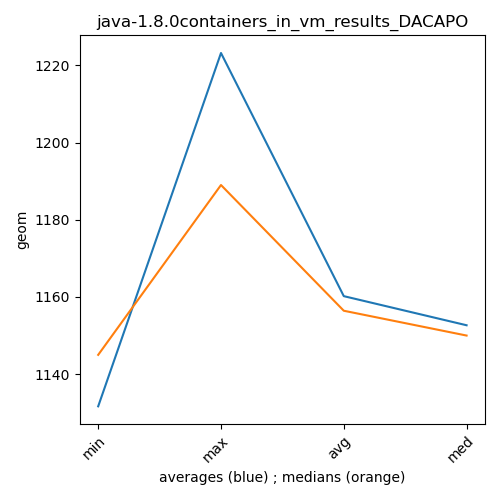

java-1.8.0 DACAPO
Context at bottom
/home/jvanek/git/benchmarks-in-nested-virtualisation-toolchain/final_results/containers_in_vm_results/containers_in_vm_results_JMH
java-1.8.0
DACAPO
/home/jvanek/git/benchmarks-in-nested-virtualisation-toolchain/final_results/containers_in_vm_results/containers_in_vm_results_J2DBENCH
java-1.8.0
DACAPO
/home/jvanek/git/benchmarks-in-nested-virtualisation-toolchain/final_results/containers_in_vm_results/containers_in_vm_results_RADARGUNs3
java-1.8.0
DACAPO
/home/jvanek/git/benchmarks-in-nested-virtualisation-toolchain/final_results/containers_in_vm_results/containers_in_vm_results_SPECJBB
java-1.8.0
DACAPO
/home/jvanek/git/benchmarks-in-nested-virtualisation-toolchain/final_results/containers_in_vm_results/containers_in_vm_results_RADARGUNs1
java-1.8.0
DACAPO
/home/jvanek/git/benchmarks-in-nested-virtualisation-toolchain/final_results/containers_in_vm_results/containers_in_vm_results_DACAPO
java-1.8.0
DACAPO
containers_in_vm_results_DACAPO
final score
Expected number of java-1.8.0 JDKs: 10
1st avgmed_alljdks_metric:
/home/jvanek/git/benchmarks-in-nested-virtualisation-toolchain/final_results/result_processing.py /home/jvanek/git/benchmarks-in-nested-virtualisation-toolchain/final_results/containers_in_vm_results/containers_in_vm_results_DACAPO geom False
values: [1145, 1173, 1140, 1189, 1187, 1189, 1204, 1347, 1211, 1145, 1039, 1134, 1181, 1158, 1148, 1127, 1147, 1167, 1177, 1115, 1150, 1151, 1199, 1130, 1168, 1202, 1114, 1190, 1168, 1143, 1133, 1156, 1144, 1190, 1174, 1146, 1176, 1131, 1128]

Expected number of iterations: 5
final number of values: 39 out of 50
Pass rate: 78.0%
values: (1039, 1347, 1161.948717948718, 1156)

** accuracy from all jdks and runs
more is better
MIN: 1039
MAX: 1347
AVG: 1161.948717948718
MED: 1156
Relative differences 1:
MIN-MAX: 23.0 %
MIN-AVG: 11.0 %
MIN-MED: 10.0 %
MAX-MIN: -30.0 %
MAX-AVG: -16.0 %
MAX-MED: -17.0 %
AVG-MED: -1.0 %
stored to java-1.8.0.properties. sort | uniq that!
2nd avgmed_by_jdk_metric:
values: [1152.6666666666667, 1223.2, 1131.6666666666667, 1149.6, 1157.0, 1147.3333333333333, 1160.0, 1168.4, 1153.2, 1151.0]

values: [1145, 1189, 1145, 1148, 1167, 1150, 1151, 1168, 1144, 1146]

values: (1131.6666666666667, 1223.2, 1159.4066666666668, 1153.2)
values: (1144, 1189, 1155.3, 1150)

** accuracy from all jdks where runs were avged
more is better
MIN: 1131.6666666666667
MAX: 1223.2
AVG: 1159.4066666666668
MED: 1153.2
Relative differences 1:
MIN-MAX: 7.0 %
MIN-AVG: 2.0 %
MIN-MED: 2.0 %
MAX-MIN: -8.0 %
MAX-AVG: -6.0 %
MAX-MED: -6.0 %
AVG-MED: -1.0 %
stored to java-1.8.0.properties. sort | uniq that!
** accuracy from all jdks where runs were medianed
more is better
MIN: 1144
MAX: 1189
AVG: 1155.3
MED: 1150
Relative differences 1:
MIN-MAX: 4.0 %
MIN-AVG: 1.0 %
MIN-MED: 1.0 %
MAX-MIN: -4.0 %
MAX-AVG: -3.0 %
MAX-MED: -3.0 %
AVG-MED: -0.0 %
stored to java-1.8.0.properties. sort | uniq that!
pass rates:
containers_in_vm_results_DACAPO=78.0%
Context:
- containers_in_vm_results
- DACAPO